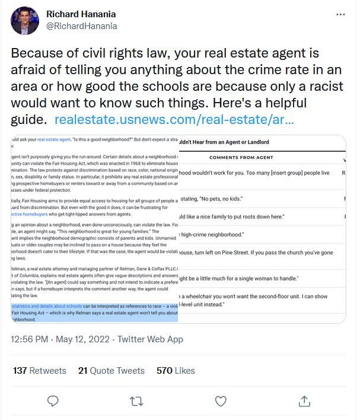
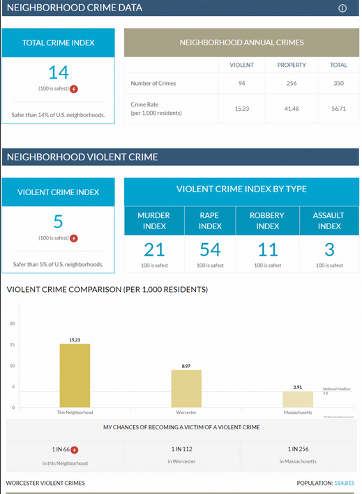

There was a recent and popular tweet about how real estate agents can’t tell you anything about crime in the neighborhood you’re looking at due to concerns about racism.

The article linked in the tweet, from the U.S. News & World Report said the following:
Crime statistics and details about schools can be interpreted as references to race – a violation of the Fair Housing Act – which is why Relman says a real estate agent won’t tell you about crime in a neighborhood.
As an example they said that a real estate agent that said “That’s a pretty high-crime neighborhood” would be a race-based violation of a federally protected class. The idea being, I guess, that crime is something that non-Whites do so saying a place has lots of crime is is akin to saying that this neighborhood has many non-White people. And talking about the racial breakdown of a neighborhood is illegal? That does not sound right to me but the point of this post isn’t to discuss the law. Instead it’s to look at the crime data that these real estate websites used to provide, and which some still do.
In the wake of George Floyd’s murder a number of major real estate websites removed the crime data they had on their sites (see here for an article about this change). Their argument is that the data is flawed and (most importantly) that crime data can both be racially biased itself and cause racial bias in where people choose to buy homes. They apparently did not consider any of these issues beforehand, and their use of the data is one of the worst ways I’ve ever seen this data used.1
Some of the press releases by these companies just show how little they actually understand about crime data. Here’s what Christian Taubman, Redfin’s “Chief Growth Officer” said was one alternative they considered for better crime data:2
To get around the gaps with reported crimes, the main other data source we considered was the National Crime Victimization Survey from the Bureau of Justice Statistics. By virtue of being a survey, this has the advantage of being able to capture both officially reported and unreported crimes. However, also by virtue of being a survey, if there’s racial bias in respondents’ answers this will get reflected directly in the data. And there are troubling signs of this: in the 2019 survey, people reporting crimes were more likely to describe their offender as young, male, and Black than would be expected given the representation of those groups in the population.
There’s some basic issues like assuming that differences in group’s share of being offenders being different than their share of the population is caused by bias - it may be, but that’s a more complicated question. But here’s the main issue. The National Crime Victimization Survey gives national estimates. It’s right there in the name! You cannot get neighborhood-level victimization data from this survey. You can’t even get state-level victimization data! They never actually did use this data, but it shows how little these companies care about measuring crime right. And they demonstrated their lack of caring about accuracy in the crime data they did use.
So, what were the crime measures they actually used?
For all of the companies that I’ve seen, and I did look at some of these sites before they took down their crime pages, they use FBI Uniform Crime Reporting (UCR) Data and magically convert it to neighborhood-level crime rates.3 Here’s the problem, it is impossible to get neighborhood-level data from UCR. UCR data is available only at the police agency-level. You cannot dis-aggregate it down to a smaller geographic unit. This should not be a hard concept but apparently it is.
For this post we’ll look at the method used by Neighborhood Scout, a company still providing crime data for real estate agents, property managers, investors, and individual home buyers. They not only provide crime rates in each neighborhood but benchmark it against all other neighborhoods in the US to show how it ranks. And even include your changes of becoming a victim of a violent crime. If this sounds impossible, well it is.
Their main crime description page is available here. And here’s an example of what their crime report looks like.

This is how they describe their product (and let’s be very clear, they are selling their findings):
NeighborhoodScout Crime Risk Reports provide an instant, objective assessment of property and violent crime risks and rates for every U.S. address and neighborhood. We offer seamless national coverage and up to 90% accuracy.
This is a very bold claim and note that they are specifically giving crime data at both the neighborhood and even the address-level, far more precise than they can possibly get from UCR data. And they do use UCR data as they say on this page.
We start by collecting the raw crime data from all 18,000 law enforcement agencies in the United States. We then assign these reported crimes from each of these law enforcement agencies to the specific local communities the agency covers, and hence in which community the crimes have occurred, using a custom relational database that our team built from the ground up.
The 18k agencies is clearly UCR data and they say elsewhere that it is FBI data. They convert this to neighborhood information, which as they say here is at the Census tract-level, which is the Census’s rough approximation of a neighborhood. This is important because the Census provides a great deal of demographic information at the tract-level which is likely how they go from agency to neighborhood-level.
So how do they get their neighborhood-level data? From algorithms of course!
First they take the UCR data and “using a custom relational database that our team built from the ground up” assign the crime to the “specific local communities the agency covers.” This is no easy task considering overlapping jurisdiction, especially for special agencies like schools or Sheriff’s Offices. Once they do this, here’s how they describe their next steps:
Once we have this modified set, we build upon it, producing sub-zip code crime hazard data with risk indices for violent crime, property crime, motor vehicle theft, crime density, and more. We then develop algorithms to statistically estimate the incidences of both violent and property crimes for each neighborhood in America.
The resultant formulae produce numbers of crimes and crime rates for neighborhoods with upwards of 90% accuracy. We deploy 80 proprietary formulas to increase the accuracy of our predictions, and apply them based on city or town characteristics to produce the best model fit in each case. This method produces the best crime risk information for every neighborhood in America.
Are you still following? I am not. How do they create “sub-zip code crime hazard data”? And what even is a “crime hazard data”? The “80 proprietary formulas” are the algorithms they use to move from agency to neighborhood-level data. I am certainly no statistician but I have yet to read a paper that uses 80 formulas to do anything. There is a lot to digest in these two paragraphs and it is extremely unclear what they’re doing here.
What do their algorithms do? How do they get neighborhood-level data before using any of their magical algorithms? How do they know it’s 90% accurate? Accurate compared to what? How can “city or town characteristics” matter in data that is already at the agency-level (which in most cases in a local city police agency)?
This is what I think is happening. They take UCR data and apply some algorithm to handle missingness to get data at “97% accuracy”. Decades of criminology research on crime missingness has yet to produce an effective way to handle missingness so I am highly doubtful that this group can do what researchers whose entire lives are spent on this data cannot. But let’s say they do solve missingness.
Then divide the UCR agency-level crime data by the population of the Census-tract which is what each neighborhood actually is. Is a tract is 10% of the city’s population, it gets 10% of the crime. Well, not exactly. given how they say it’s based on city characteristics I’d guess they do some weighting to adjust the population based on demographic traits the are correlated with crime. So the tract with 10% of the population would get more crime if residents have traits correlated to crime and less if they didn’t have those traits.
This also gets more complicated when you consider how hard it is to match a Census tract to the police agencies that have jurisdiction there. They say they account for this by including “crimes that truly occur within any city or town, not just crimes reported by a single municipal agency.” But it’s a much more complicated task than they give it credit for. Census tracts are unique within a county in a state but can be in multiple cities at once. Police agency jurisdictions are also complex. A Sheriff’s Office, for example, may technically be an agency for the entire county but in practice does not work in areas where a local police agency is already at. So your local Sheriff will probably stay in unincorporated areas or in cities that contract to the Sheriff for policing. And that ignores special types such as university police or transportation system police whose jurisdiction is often small, weird, and overlapping with larger agencies.
This is the method that I am assuming they follow, though admittedly they do not give enough information to figure out exactly what they do. Maybe I’m completely off-base here. Maybe their methods are great. Their algorithms may truly be a very accurate representation of crime at the neighborhood-level. Achieving this feat would be a remarkable accomplishment. One that, as far as I’m aware, no academic has managed to do.
While criminologists squabble about how to aggregate data up to the county-level, they’ve allegedly solved the issue of de-aggregating data down to a very small geographic level. Indeed, down to the address! If so, let them prove it. Release their “algorithms” and their raw data to researchers so we can compare it against other data to see how truly accurate their results are.
Neighborhood Scout certainly charges enough for their results. 10 reports a month will cost you $39 while 200 reports is $120. That’s quite a chunk of change for results that are likely far from reflecting reality about crime in that neighborhood. And when they’re selling a product that cleans to have near-perfect data (“90% accuracy”!) to individuals and organizations who make decisions based on this data, they need to be right.
As I noted above, Neighborhood Scout is only one example of what these types of companies are doing. And is very consistent with how the companies that no longer use these data used to do. This is probably how many people ever see crime data - as very inaccurate representations of what crime looks like in their neighborhoods. There’s plenty of research that shows that people do not understand crime trends, either in their own neighborhoods or nationally (see here for one example). How much of this misperception about crime is due to getting their information from misleading sites like this? Probably quite a bit. How many people made a decision based on this likely very inaccurate data? Again, probably quite a few.